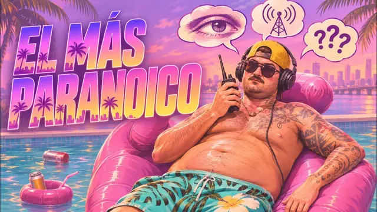

Se abre en YouTubeDe qué trata el vídeo
Cal Hampton es uno de los personajes secundarios de GTA 6: vive en los Cayos de Leonida, es amigo de Jason y trabaja con Brian.
En el vídeo repasamos lo que se sabe de su personalidad, su relación con la guardia costera y las pistas que dejan los tráilers sobre su papel en la historia.
Puntos clave
- Amigo de Jason y socio de Brian
- Su vida en los Cayos
- Su relación con la guardia costera
- Pistas sobre su papel en la trama
Título en YouTube: «Curiosidades Que No Sabías de CAL HAMPTON». Análisis hecho con material oficial de Rockstar Games, sin filtraciones.